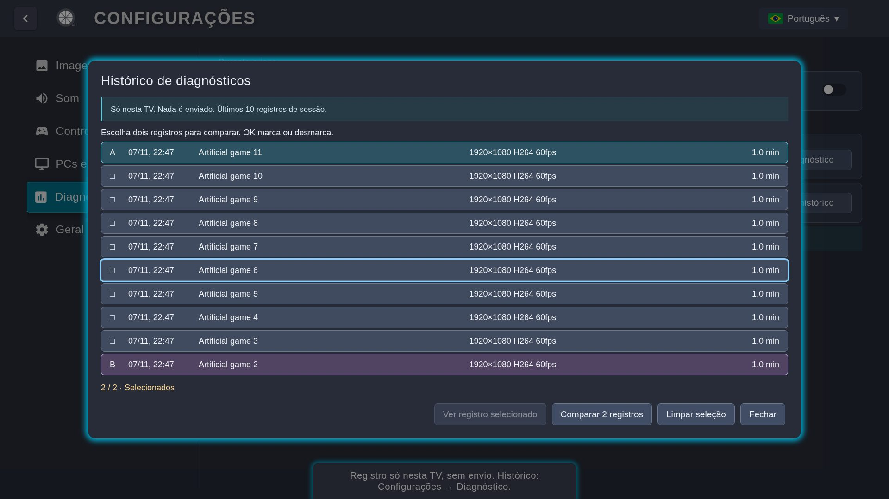
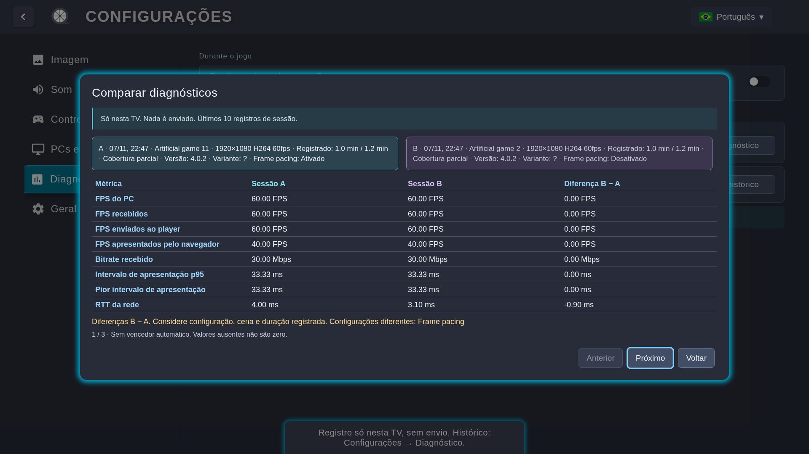

Na TV, abra Apps, digite 12345, ative Developer Mode e reinicie a TV. Informe o IP do dispositivo instalador quando solicitado; os menus variam por modelo.
Abra Apps2Samsung no dispositivo instalador e selecione a TV na mesma rede.
Escolha Custom WGT, selecione o arquivo e instale. Entre na conta Samsung se o instalador solicitar.
Atualizar sem perder configurações
Reutilize o perfil de assinatura. Evite desinstalar o app e regenerar o certificado. Confira o aviso do instalador antes de autorizar uma recuperação que remova o aplicativo.
Uma instalação limpa pode apagar preferências e pareamentos. Normal e ForceGM atualizam a mesma instalação quando a assinatura é compatível.
Alternativa: Tizen Studio
Instale TV Extensions e Samsung Certificate Extension.
Conecte a TV no Device Manager e permita instalar aplicativos.
Crie um perfil Samsung com o DUID da TV, importe o WGT e reempacote/assine usando esse perfil.
Execute o projeto na TV. O WGT original pode não instalar sem a assinatura adequada.
Instale e abra VibeShine ou Sunshine no PC. Siga o assistente do host para configurar captura, encoder e permissões.
Na interface web do host, adicione jogos em Applications. Use Desktop para uma primeira conexão simples.
Abra VibeLight na TV e selecione o PC. Se não aparecer, use Adicionar PC e informe o IP local do computador.
A TV mostra um PIN. Digite esse PIN na página PIN da interface web do host.
Confirme que o PC aparece pareado e abra sua biblioteca.
TVPIN de pareamento
→
PCInterface do host · PIN
O PIN é usado no pareamento. Não publique PINs, endereços ou capturas com informações da sua rede.
Acordar o PC
Acordar PC usa Wake-on-LAN e exige suporte no BIOS/UEFI e no adaptador de rede. Confira o MAC do adaptador físico na configuração desse PC. Wi-Fi e uso após desligamento dependem do hardware.
Interface do código atual, com valores ilustrativos.
Imagem
Resolução, FPS, bitrate, codec, HDR, faixa de cor, frame pacing e latência ultrabaixa.
Som
Canais, limite adaptativo do buffer e áudio também no PC.
Controles
Mapeamento, testes, analógicos, gatilhos, vibração e mouse.
PCs e biblioteca
Entrada de endereço, ajuste de resolução no host, ordenação e remoção dos PCs.
Diagnóstico
Avisos de conexão, último registro, histórico e comparação.
Geral e sobre
Idioma, sons de navegação, informações, ajuda, reinício e restauração.
Latência ultrabaixa e ForceGM
Latência ultrabaixa seleciona um modo do player que desativa melhorias de imagem da TV para reduzir atraso. Pode ser instável em algumas TVs/versões do sistema; no Tizen 9 há histórico de tela preta e congelamento. O padrão permanece desligado, inclusive ao usar ForceGM.
Por que não usar sempre o menor buffer?
O valor é um limite adaptativo, não um atraso fixo. O áudio começa normalmente com cerca de 20 ms e amplia a margem quando faltam amostras. Um limite menor pode causar cortes ou estalos sem melhorar uma sessão que já está estável.
Frame pacing melhora a regularidade do movimento e pode adicionar latência. Preserve o ajuste que funciona na sua TV.
As estatísticas ficam só nesta TV e não são enviadas. Apenas os últimos 10 registros ficam disponíveis. Sem ativar no jogo, nada é registrado.
No menu in-game, ative Estatísticas. O registro começa naquele momento.
Você pode ocultar os números; o registro continua até sair daquela sessão.
Ao terminar, abra Configurações → Diagnóstico. Último diagnóstico abre o registro mais recente.
Em Histórico e comparação, marque quaisquer dois registros como A e B e escolha Comparar 2 registros.
Cada nova sessão começa sem registro. Ativar no meio do jogo gera cobertura parcial, indicada no relatório. Ao salvar o 11º registro, o mais antigo sai do histórico.

Seleção A/B com sessões artificiais.
Nove grupos, sem perder contexto
Transmissão, FPS, fluidez, rede, quadros, processamento no PC, trabalho na TV, áudio e eventos. Detalhes técnicos preserva clock, cadências, carga, CPU/memória da TV e contexto dos piores momentos.

Diferença B − A; valores ilustrativos.
No overlay, FPS e valores nativos acompanham a janela mais recente; percentis, máximos e contadores abrangem o período registrado. No relatório, as médias abrangem o registro. p95 significa que 95% das medições ficaram até aquele valor. A consulta mostra versão, variante e ajustes salvos; a comparação mostra os valores dos ajustes que diferem. Eventos são normalizados por minuto efetivamente medido; os Detalhes técnicos mostram a cobertura nativa.
RTT é ida e volta da rede. Clock e entrega ao player não medem latência total botão→imagem. FPS de apresentação vem do navegador, não de uma medição física do painel. Sem dados significa indisponível, não zero.
Confirme que o host está aberto, TV e PC estão na mesma rede e o firewall permite o host. Adicione o PC pelo IP local e refaça o PIN na interface web correta.
Confira Applications no host e use Atualizar biblioteca. Se o PC não responder, confirme rede e host; uma falha de resposta não prova que o computador está desligado.
Tela preta ou vídeo congelado
Confira resolução/codec suportados e mantenha a latência ultrabaixa desligada, especialmente no Tizen 9. Se houve falha de limpeza e o app pede reinício, reinicie antes de reconectar.
Engasgos com FPS médio alto
Ative estatísticas no jogo e observe intervalos p95/máximo, lacunas de quadros e variação de RTT. Compare sessões de configuração e cena semelhantes; a média de FPS pode esconder pausas.
Áudio corta ou estala
Confira a saída de áudio e o limite adaptativo. Um limite baixo deixa menos margem para atrasos; não trate um buffer menor como melhoria automática. No relatório, veja faltas/excessos e buffer real/alvo.
Nenhum diagnóstico aparece
Ative Estatísticas no menu durante o jogo e saia da sessão para salvar. Consulte Configurações → Diagnóstico. Sessões não ativadas não geram registros e não apagam as anteriores.
Erro ao salvar o histórico
O histórico anterior é preservado. Um aviso de falha significa que a sessão atual pode não ter sido salva. Não desinstale o app para tentar recuperar registros.
Fork independente do Moonlight Tizen para jogar no PC usando TVs Samsung. Este guia acompanha o código atual; veja as notas da release instalada para confirmar seus recursos.